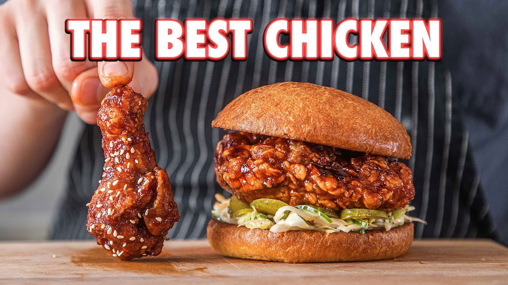

Fried Chicken Recipe

Fried Chicken
Fried Chicken
I love homemade fried chicken. Like, I REALLY love fried chicken. But Korean style
fried chicken takes the cake. It's easy, it can be completely gluten-free and we
are going to make both the classic gochujang wings and one of my favorite sandwiches of all time.
INGREDIENTS
Traditional Dredge:
2lbs (900g) chicken wings, separated or drumsticks
1 Tbsp (8g) grated ginger
1 cup (165g) potato starch or cornstarch
Sauce:
2 Tbsp (30g) dark soy sauce
1.5 Tbsp (24g) rice vinegar
Method
Back to Home